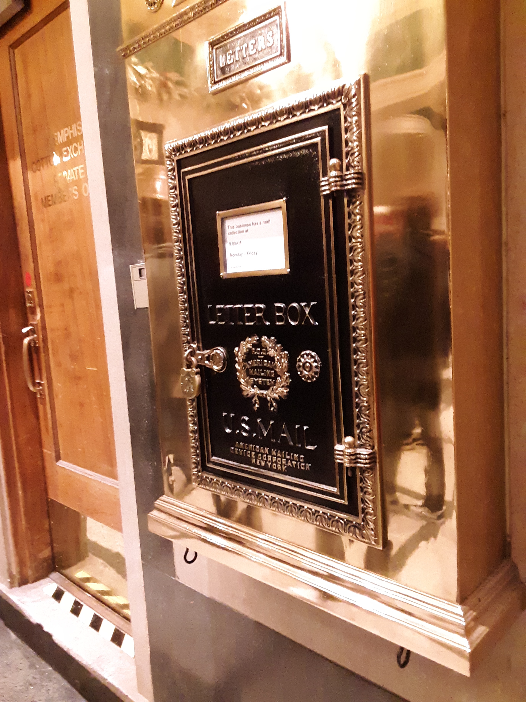

Archer Malmo Trip

On the trip I had fun because I got to experience a real web designer in action. He explained to us his reason for becoming a web designer. He told us being a web designer wasn’t his first dream. But he realized that was his dream later on. To start off my day of the trip, I woke up super late and I missed morning practice. My mom had to drive me to school and I had to hear coach yelling at me for missing practice. I only went to first and second period because we had to leave to go to the field trip during third period. The people who were going to the field trip had to wait in the Main Building.
We had to have a partner for the trip, so my partner was Zay. He was cool, and I had no problem with him being my partner. When we got on the bus together, we sat by each other. The place we were going to was called the “Archer Malmo” I enjoyed being there and I had no problem with anyone on the trip. The area we were in was called Downtown Memphis. It was a short walk. To the place when the bus dropped us off.
The place had an elevator and a total of more 7 or more floors in the building. I took pictures and we made jokes and had fun. The speaker spoke for about an hour and 20 minutes. It was long and boring, but I wasn’t going to say that out loud. There were many questions answered and he explained the definition of I Frame and more. They had their very own ping pong table and there were lots of Christmas decorations. It was a beautiful sight to see.

I saw lots of trophies and their eating room. Everyone had their own area, we went into the photographic room. It was a really great trip. My favorite part was when he showed us some of his work. We took a picture and enjoyed each other. We left the place at about 11:50. We had to wait on the bus for about a good minute. Afterwards we went to Cookout and that line was so ling. But believe it or not the transition was very fast. I had a Double Cheeseburger, with mayo and pickle, some fries, a taco, and a sprite.

We were at that place for a good minute. We pulled up at about 12:06 an left at one o’clock. When we walked in almost everyone was looking at us. It was a lot of people who walked in. When we left the bus driver made us throw our drinks out, I fell asleep on the way back and had to go to seventh period. We had work in seventh period, but it wasn’t a lot.